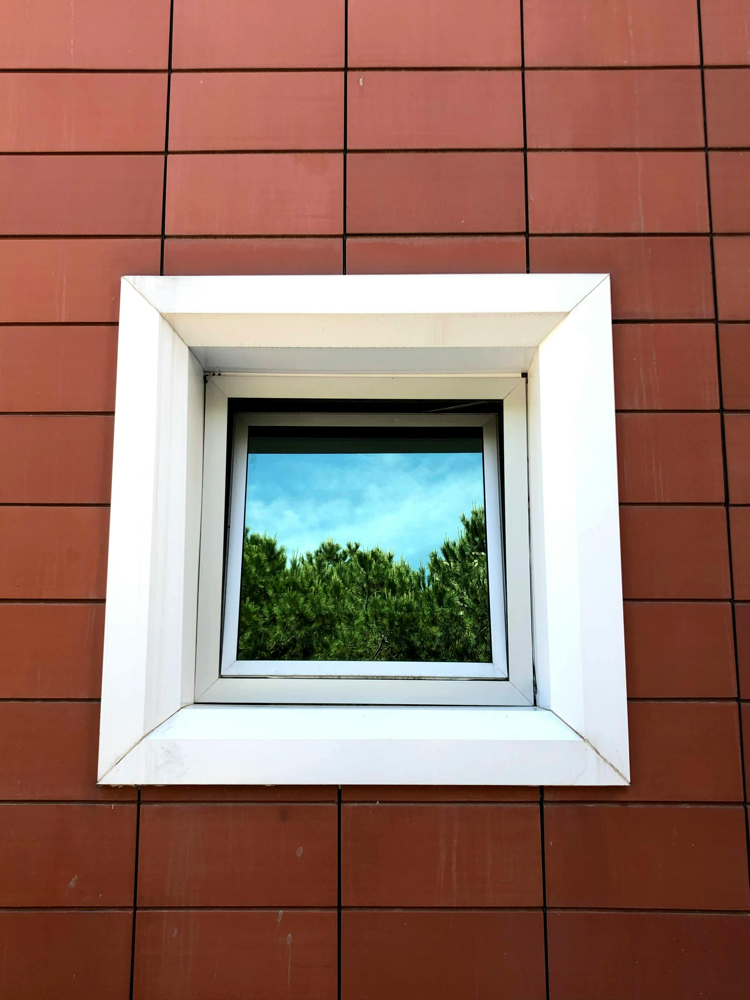
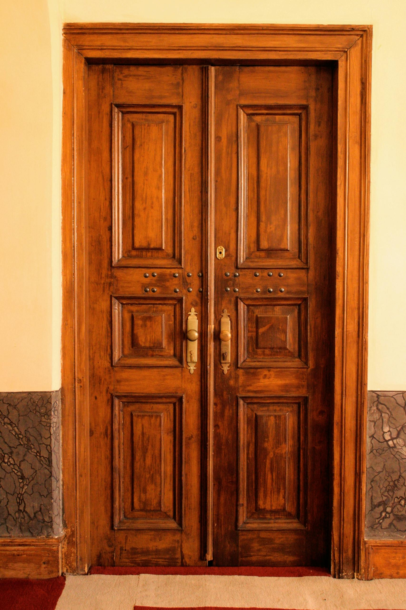

Bangun datar yang memiliki 4 sisi sama panjang dan 4 sudut siku-siku.

Contoh: Jendela RumahMemiliki 2 pasang sisi sejajar sama panjang dan 4 sudut siku-siku.

Contoh: Pintu Rumah1. Atur p=12 dan l=12. Apakah setiap persegi dapat disebut persegi panjang?
2. Jika Diagonal AC dinyalakan, apakah panjangnya lebih besar dari sisi p? Jelaskan!
3. Matikan Ruas BC dan DA. Bangun apa yang tersisa? Sebutkan cirinya!
4. Apa yang terjadi pada titik koordinat jika nilai panjang (p) diperkecil menjadi 2?
1. Keliling persegi panjang 60 cm. Jika l=10 cm, maka p adalah...
2. Luas persegi adalah 144 cm². Berapa panjang sisinya?
3. Jika p=10 dan l=5, berapakah selisih Luas dan Kelilingnya?
4. Sebuah lapangan berbentuk persegi dengan keliling 100m. Luasnya adalah...
Misi 1: Buat Keliling tepat 40 cm. Masukkan p dan l:
Misi 2: Berapakah Luas bangun yang tampil di kanvas sekarang?
Misi 3: Cari kombinasi p dan l agar Luas = Keliling (Angka sama)!
Misi 4: Jika p=20, berapakah l agar Luasnya menjadi 100?